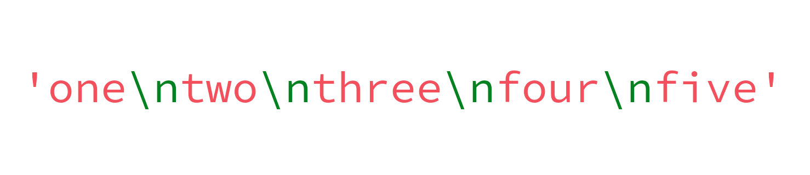
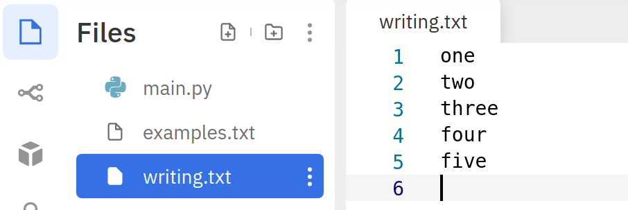

Lesson 7.4
File methods
read()
Let us continue working with examples.txt that we created in the previous lesson. If you recall, examples.txt has the following contents:
Let us now look at a different way of reading from a file, using the read() method.
This gives the following output:
read() is a method defined for the file object. When it is called without any argument, it returns a string that contains the entire content of the file. If you head to the console (it is to the right of the editor in Replit) and type the string content, this is what you get:
Notice that content is a single string. It contains the contents of the file, but between consecutive lines in the file, there is a '\n':

Except for the last line, every line in the file ends with a '\n' character. When this string is printed to the console — print(content) — we get five separate lines even though we are only passing a single string to the print() function. This is because of the presence of the newline character in the string. Whenever a newline character is encountered, the Python interpreter moves to the next line.
Now, it is clear why the following piece of code printed an extra line between consecutive lines in the file:
f = open('examples.txt', 'r')
for line in f:
print(line)
# line ends with a \n character for all lines except the last one
# this is why we get an empty line between consecutive lines in the console
f.close()
readline()
As its name suggests, the readline() method reads from the file one line at a time:
The variables line1, line2, …, line5 will hold the following values at the end of execution of the code given above:
| Variable | Value |
|---|---|
line1 |
'one\n' |
line2 |
'two\n' |
line3 |
'three\n' |
line4 |
'four\n' |
line5 |
'five' |
Notice that line5 doesn't have a '\n' at the end as it is the last line in the file. Here, we know that there are five lines in the file. This helped us define five separate variables. But what if there are more lines? Generally, we read a file so as to see what its contents are because we don't know what is there in it. Clearly, we need a way to figure out when the file ends.
Now, consider the following code. What happens if we try to read the file using readline() after all the lines in the file have been read?
If we execute this and head to the console, we see that the variable line defined in line 7 is an empty string! This gives us a way to determine when a file is empty:
Keep reading lines from the file until an empty string is encountered.
Let us implement this:
Here, we have managed to read the file using just one string variable. Let us make few more changes to this code:
In this code, we have made two changes. One in line 3 and another in line 4. The loop condition in line-3 checks for the empty string. If line is an empty string, it evaluates to False and the loop will be terminated. This is a compact way of writing line != ''. Python treats empty sequences as False. If this is confusing, execute the following code and check the output:
In line 4, we are using the strip() method to strip the string line of all the whitespace characters at the beginning and at the end. In this way, the trailing newline at the end of line will be stripped. This way, we don't need to use the end argument.
readlines()
Finally, Python also provides a way to read the file and store it as a list of lines:
Here, lines is a list of lines. Notice that each element in lines corresponds to one line in the file. It is always a string:
write()
We already saw the write() method earlier. There, we used the write() method five times to write five lines. Let us now use a loop with the help of the lines list. First, we run the code:
When we execute this, the following file is created:

We see that there are six lines in the file and not five, though we seem to have written only five lines. The problem is with line-4, where we are adding '\n' after every string in the list lines. We should make sure that we don't add a '\n' after the last string in the list:
f = open('writing.txt', 'w')
lines = ['one', 'two', 'three', 'four', 'five']
for i in range(len(lines)):
line = lines[i]
if i != len(lines) - 1:
f.write(line + '\n')
else:
f.write(line)
f.close()
Now, check the file, you will see that it has exactly five lines! Let us now try to write an integer to the file:
This throws the following error:
Traceback (most recent call last):
File "main.py", line 2, in <module>
f.write(1)
TypeError: write() argument must be str, not int
We see that write() method accepts only string arguments. If we want to write integers to a file, we have to first convert them to strings:
As an exercise, try to run the following code. What do you observe? Why do you think this happens?
writelines()
We can write a list of lines to a file using the writelines() method:
Note that the argument passed to the writelines() method is a list of strings. This will create a file having the following contents: